60 · End-to-end execution walkthroughs #
Key terms #
| Term | Plain meaning |
|---|---|
| Route | The ordered steps from a C action, through GCC/GDB/wrapper, into saved JSON and finally a parser query. |
| Oracle | An independently checked expected fact used by a test, such as C's sizeof or a native GDB value. |
>
The big picture #
These twelve stories connect the DOC-2 engine chapters and DOC-3 parser chapters into continuous source-guided paths. They are not a replacement for the subsystem pages. The normal-execution and parser stories reuse fresh smoke runs recorded in DOC-2/DOC-3; the crash, recursion, fork, heap and adversarial cases use the final Stage 1 audit corpus and are explicitly labeled as historical audit evidence where applicable. Illustrative data is marked as such.
1. Complete normal C execution #
Scenario. fixtures/c/phase8b_defined.c defines a struct, global, alias, heap array, recursion and realloc. The DOC-2 smoke run and the final audit both report 45 snapshots, 157 retained instruction events and 3 heap events for this fixture. The trace is a normal dual-mode recording with optional AST metadata.
Route. CLI/config → GCC → DWARF → GDB stop loop → trace assembly → JSON export → parser load/index → validation → TP-6/TP-7.
Call path.
mainparses CLI and callsCli::to_config(src/main.rs:26-34;src/cli.rs:197).trace::trace_programcreates the supervisor scope and callstrace_program_inner(src/trace.rs:132-167).compiler::compile_projectbuilds the wrapped debug binary and optional sanitizer artifacts (src/trace.rs:235;src/compiler.rs:529-581).dwarf::extract_excludingrecords static metadata (src/trace.rs:355;src/dwarf.rs:584).run_gdb_phaselaunches GDB and enters the stop loop (src/trace.rs:1113-1191). The MI reader parses asynchronous stops; a tokened^doneis not a stop (src/gdb_mi.rs:533-671).- At a stop, the loop drains event rows, captures state and appends a snapshot/checkpoint (
src/trace.rs:1387-1405,1577-1677;src/gdb_mi.rs:1840-2227). trace_program_innerreconstructs heap history, associates DWARF and runsevidence::fuse(src/trace.rs:851-968).mainexports the returnedDebugSessionTracethroughjson_export(src/main.rs:50-57;src/json_export.rs:152-167).TraceStore::opengates, decodes and assembles the canonical store (src/trace_parser/mod.rs:240-258).validated_semanticruns one deep pass;checkpoint_summarycomposes a bounded consumer view (src/trace_parser/semantic.rs:38;src/trace_parser/consumer.rs:58).
Intermediate data. A stopped frame has stop_id, source location, frame PC and activation path. A snapshot owns variables, caller frames, heap blocks and raw bytes. The JSON has instruction events, source-checkpoint positions, heap events/lifetimes, stage results and coverage. The parser adds only indexes and reports; it does not change the trace.
Failure and uncertainty. A missing optional AST registry, a partial memory read or a nonterminal limit remains partial/unavailable. A crash or timeout can still produce a valid trace. The parser's schema load does not certify structural soundness.
Why this design. The engine is a recorder, not an interpreter. The parser is an immutable reader. Separating export from load prevents a live debugger from becoming a query dependency.
Navigate. Engine architecture, GDB controller, parser ingestion, parser walkthroughs.
Diagram #

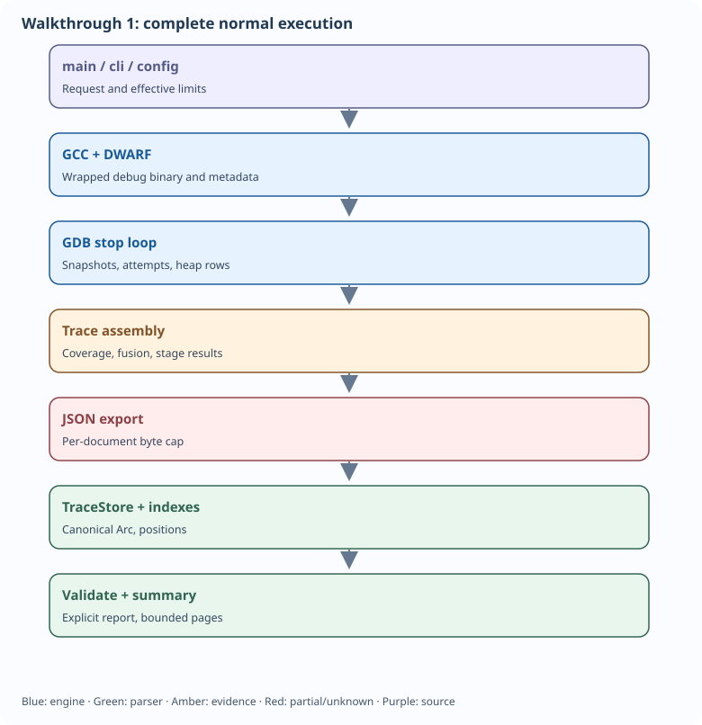
2. Function calls, stack frames and recursion #
Scenario. fixtures/c/recursive.c calls recurse(3); the final audit records 26 snapshots, 69 retained instructions and 45 caller-frame records with max_caller_frames=3.
Route. GCC → GDB frame query → activation path → snapshot caller frames → parser frame-scoped variables.
Call path. run_gdb_phase observes a user-code stop (src/trace.rs:1518-1568); GdbSession::capture_state requests -stack-list-frames 0 200 and computes an oldest-to-youngest activation path (src/gdb_mi.rs:1840-1910); capture_caller records caller frames without changing GDB's selected frame (:1753-1834); Recorder::checkpoint retains the snapshot (src/recorder.rs:259-265); TraceStore::checkpoint_summary and CheckpointSummary::frame_activation expose one activation (src/trace_parser/consumer.rs:58,251).
Intermediate data. Each frame has a level, function, file/line, PC and activation ID. A local variable identity is activation:<id>:<scope>:<name>; two recursive activations with the same name remain distinct. A caller variable is stored in caller_frames, not merged into frame zero.
Failure and uncertainty. A truncated frame chain clears activation continuity rather than reusing a sliding prefix. A duplicate caller activation is ambiguous; an ID 0 is no activation. A caller capture error remains visible.
Why this design. GDB can print the same function name at several levels. Activation IDs preserve the observed distinction without inventing a cross-stop variable lifetime.
Navigate. Stack and memory, GDB capture, TP-7 frames.
Diagram #

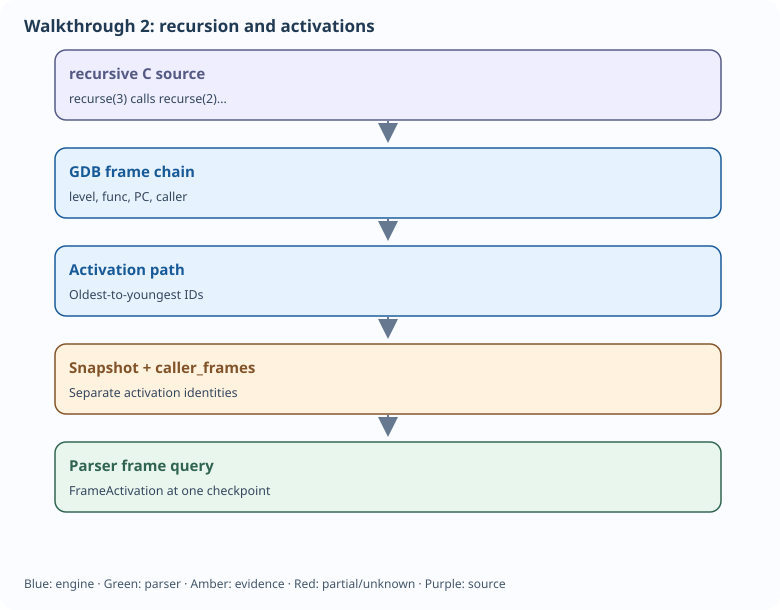
3. Heap allocation #
Scenario. phase8b_defined.c performs malloc(3 * sizeof(int)); the audit records 3 heap events for the run.
Route. C wrapper → event file → Rust reader → HeapTimeline → trace lifetime → parser index → consumer allocation page.
Call path. __wrap_malloc calls the real allocator and cte_emit_locked (c_runtime/alloc_tracker.c:343-353,266); the event is appended to the PID-local event file. EventFileReader::read_new accepts complete rows (src/allocation_tracker.rs:293); HeapTimeline::ingest verifies the per-PID sequence and updates block state (:521); push_snapshot records alive blocks (src/trace.rs:2179). The parser builds AllocationIndex by allocation ID (src/trace_parser/indexes.rs:627), ValidatedSemanticView::heap joins lifetime/state/events (src/trace_parser/semantic.rs:225), and heap_events_page returns borrowed events (src/trace_parser/consumer.rs:88).
Intermediate data. An illustrative event row is:
{"kind":"malloc","id":1,"addr":"0x55d0a0002a10","size":32,"pid":100,"seq":4,"caller":"0x401136"}The parser indexes the numeric ID, never the address. A final trace may widen IDs when multiple PIDs are observed; raw event IDs remain PID-local.
Failure and uncertainty. A partial write, malformed row, sequence gap or missing ACK lowers completeness. A later event cannot retroactively certify missing rows. An allocation ID is not an exact instruction timestamp.
Why this design. Address reuse is legal in C, so identity must come from wrapper events and lifetimes. A file boundary keeps the C runtime independent of Rust.
Navigate. C allocator runtime, heap reconstruction, parser indexes.
Diagram #

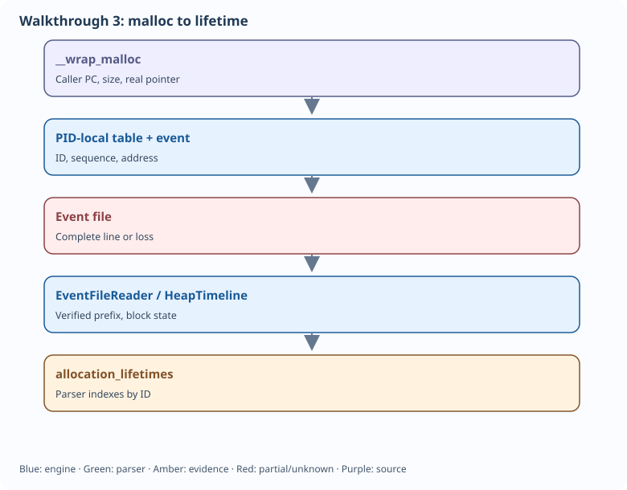
4. Free, address reuse and realloc #
Scenario. fixtures/c/heap_provenance.c frees and reallocates at a reused address; realloc_move.c moves a block; heap_provenance_realloc.c covers success, failure and glibc's terminal realloc(ptr,0). The final audit reports 44/125/7 for reuse, 12/37/5 for moved and 51/153/15 for the realloc fixture.
Route. Wrapper status rows → HeapTimeline → lifetime records → realloc_link → TP-6 confidence.
Call path. __wrap_realloc emits failed, ok_same, ok_moved or the observed terminal zero form (c_runtime/alloc_tracker.c:387-419). HeapTimeline::ingest applies status-specific transitions (src/allocation_tracker.rs:606-699). validate_heap calls realloc_link (src/trace_parser/validation.rs:1568-1795), and ValidatedSemanticView::heap maps the helper result to confidence (src/trace_parser/semantic.rs:264-285).
Valid and rejected relationships. A moved realloc has one compatible successor creation, one predecessor creation, matching PID/sequence and compatible lifetimes; realloc_link returns Verified. A forged realloc_from_id with no compatible creation is Unavailable; conflicting type/PID/sequence or a cycle is Contradictory. A terminal realloc(ptr,0) is a free-shaped terminal event, not a predecessor edge. A failed realloc leaves the old block alive.
Intermediate data. A lifetime records allocation ID, PID, native sequence, address, size, free boundary and optional realloc_from_id. Equal addresses across two lifetimes do not merge them.
Why this design. The TP8-F01 audit showed that ID existence is not relationship proof. The repair requires event and lifetime corroboration and preserves raw fields for investigation.
Navigate. Realloc and TP8-F01, heap evidence, heap reconstruction.
Diagram #

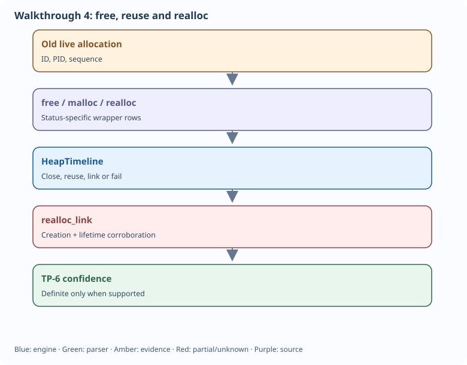
5. Pointer observation and provenance #
Scenario. heap_provenance.c keeps a stale pointer after free, then observes a new allocation at the same address. The audit records ambiguous pointer evidence, not a definite origin.
Route. GDB variable read → pointer target → observed maps/heap candidates → validation → PointerEvidence.
Call path. GdbSession::capture_state records the variable's value/address/extent (src/gdb_mi.rs:2054-2171); memory::pointer_target compares the numeric address with heap/stack/global extents (src/memory.rs:260-340); validate_pointer_reference checks status, identity, offset and extent (src/trace_parser/validation.rs:1306-1415); PointerEvidence::new maps status to confidence (src/trace_parser/semantic.rs:499-540).
Intermediate data. A pointer target may contain kind, address, allocation_id, address_match_allocation_id, provenance_status and points_to. A numeric match is address_only/ambiguous_reuse; a definite ID requires compatible recorded provenance. A freed address is not a live object.
Failure and uncertainty. A missing status is unavailable, not permission to infer. A definite ID with address-only evidence is contradictory. A pointer variable is not its target object; a target variable identity is resolved only at the same checkpoint.
Why this design. Address containment is cheap and useful, but C permits reuse and pointer arithmetic. The parser preserves the observation and refuses to upgrade a candidate.
Navigate. Pointer and process coverage, stack and memory, TP-6 heap/pointer evidence.
Diagram #

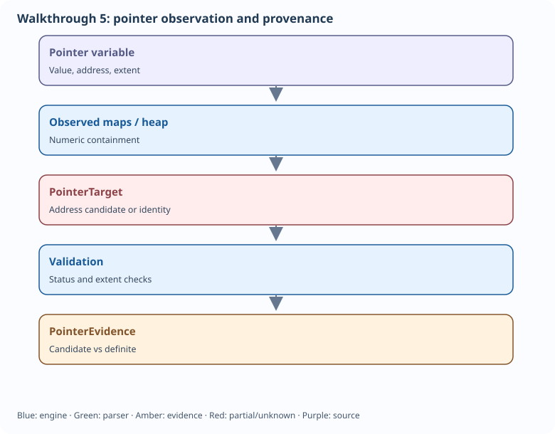
6. DWARF type information #
Scenario. fixtures/c/dwarf_types.c defines struct Node, struct Container, arrays, bitfields, typedefs and a union. phase8b_defined.c defines struct Packet.
Route. GCC debug ELF → DWARF CU/DIE traversal → type/declaration registry → runtime variable association → parser metadata lookup.
Call path. compiler::compile_project produces the debug binary; dwarf::extract_excluding enumerates CUs and DIEs (src/dwarf.rs:584); OriginResolver follows specification/abstract-origin references with a four-hop/cycle bound (:213-423); dwarf::associate links unique runtime declarations (:1045); the parser indexes type/declaration IDs (src/trace_parser/indexes.rs:178) and type_entry borrows a record (src/trace_parser/views.rs:369); ValidatedSemanticView::variable exposes optional type/declaration confidence (src/trace_parser/semantic.rs:72).
Intermediate data. A type entry records kind, size/alignment where known, members, array bounds, bitfields, declaration refs and CU identity. A variable's type_ref/declaration_ref are trace-local IDs, not pointers into the engine process.
Failure and uncertainty. Missing optional DWARF is unavailable. An unresolved cross-CU chain is not replaced by a same-name declaration in another CU. A type does not prove initialization or an active union member.
Why this design. Static metadata must remain CU-qualified and bounded. The parser borrows it rather than decoding a Stage 2 typed-memory graph.
Navigate. DWARF extraction, Clang AST, parser data structures.
Diagram #

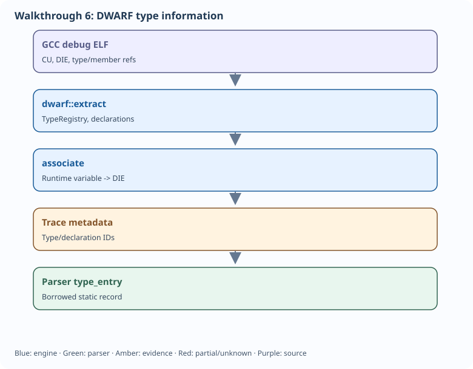
7. Optional Clang AST and evidence fusion #
Scenario. fixtures/c/ast_source.c contains declarations, a macro allocation, direct calls and source expressions.
Route. GCC flags → optional Clang JSON AST → AST registry → evidence fusion → trace cross-references → parser source expression.
Call path. trace_program_inner invokes the optional Clang pass (src/trace.rs:371; src/clang_ast.rs:228); evidence::fuse runs once after runtime/heap records (src/evidence/mod.rs:33-91); declaration linking uses CU/DIE-compatible unique matches (src/evidence/declarations.rs:132-153); heap-call correlation is site-only and records candidates/ambiguities (src/clang_ast.rs:947-1054); the parser exposes source_expression (src/trace_parser/semantic.rs:291) and TP-7 source pages (src/trace_parser/consumer.rs:422).
Intermediate data. An AST expression has a source span, declaration/expression IDs and optional macro spelling location. A heap-call candidate is a source line plus ambiguity records, not an allocation ID.
Failure and uncertainty. Unsupported GNU extensions or preprocessing differences make correlation unavailable. Multiple calls on one line are ambiguous. A source expression never proves dynamic execution.
Why this design. AST syntax is valuable for navigation, but C execution is observed by GDB and allocation telemetry. Fusion is additive and audited.
Navigate. Clang AST, evidence fusion, parser source expressions.
Diagram #

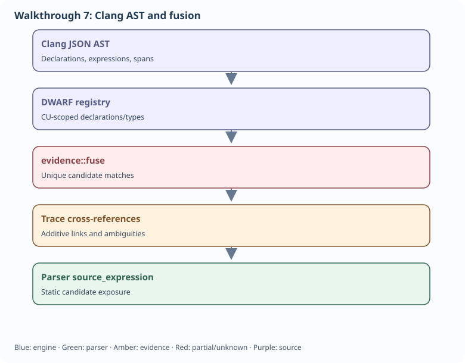
8. Crash or segmentation fault #
Scenario. fixtures/c/phase8r3_crash.c writes through a null pointer. The final audit records 3 snapshots, 5 retained instructions and 0 heap events; the run is a crash with partial evidence.
Route. GDB fatal-signal stop → partial capture → crash report → optional diagnostics → partial JSON → parser validation → diagnostic query.
Call path. run_gdb_phase classifies a fatal signal, captures state and builds a crash report (src/trace.rs:1441-1518); optional sanitizer/Valgrind passes run separately when configured (src/trace.rs:644-849); final assembly preserves coverage and stage results (src/trace.rs:851-1070); the parser's validate_deep reports partial/unavailable evidence (src/trace_parser/validation.rs:243-267); diagnostics() and valgrind_error() expose reports (src/trace_parser/semantic.rs:345-374).
Intermediate data. A crash report has a signal, source/PC site and optional notes. A snapshot at the fatal stop may be partial. Sanitizer/Valgrind reports are independent diagnostics, not primary-run heap identities.
Failure and uncertainty. A missing report is unavailable. A crash does not prove every earlier instruction was retained. A source line in Valgrind is not a primary allocation ID.
Why this design. A crash is a valid recorded outcome, not an ingestion error. Partiality is preserved so consumers can distinguish missing evidence from corruption.
Navigate. GDB controller, diagnostics, parser coverage.
Diagram #

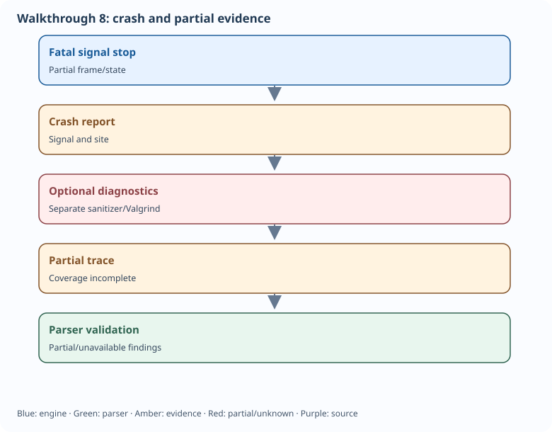
9. Infinite loop and resource limits #
Scenario. fixtures/c/infinite_loop.c loops on a volatile counter. The final audit records 60 snapshots and 203 retained instructions for infinite_loop, with step_limit_reached and incomplete execution scope.
Route. Supervisor deadline/step caps → stop loop → gaps/partial events → partial JSON → parser partial view.
Call path. supervisor::scope owns the deadline (src/trace.rs:132-164); run_gdb_phase checks command/step/terminal limits and records a gap when it stops early (src/trace.rs:1371-1568,1954-2024); Recorder::gap stores an attempted-position interval (src/recorder.rs:287-305); export preserves Timeout/StepLimitReached and coverage; the parser reports partial coverage and retains raw events (src/trace_parser/validation.rs:1934-2014).
Intermediate data. Attempted instruction count can exceed retained event count. A gap has an origin/reason and instruction position, not invented events. The trace may have snapshots but no proof of termination.
Failure and uncertainty. A step limit is not a proof of nontermination. A missing after-stop is not completion. A partial trace is valid data; the parser does not synthesize the unrecorded tail.
Why this design. Resource controls are separate from evidence completeness. The engine records what it observed and why it stopped.
Navigate. Supervision and limits, GDB stop loop, parser algorithms.
Diagram #

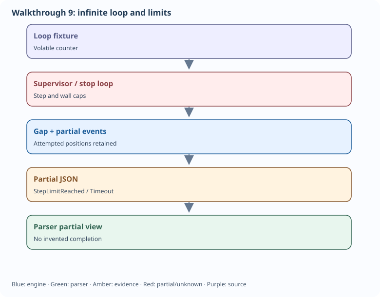
10. Forked process and heap coverage #
Scenario. fixtures/c/phase8dr_fork.c supports parent, observed-child, silent-child and incomplete-ACK modes. The final audit reports two event PIDs for observed, one event PID for silent, and two with incomplete ACK; none proves a descendant census.
Route. fork/atfork child reset → PID-local event files → reader/ACK verification → heap history → parser process scope.
Call path. The C runtime resets child lock/counters/IDs and defers table clearing (c_runtime/alloc_tracker.c:128-143); parent and logged child append PID-local rows; EventFileReader reads rows and verify_event_status checks per-observed-PID ACKs (src/allocation_tracker.rs:178-400); HeapTimeline keeps per-PID sequences; HeapProcessScope::from_history exposes the recorded scope (src/trace_parser/views.rs:28); validate_heap_process_coverage rejects unsupported child claims (src/trace_parser/validation.rs:1839-1930).
Intermediate data. The history has observed event PIDs, followed inferior PID, unobserved-process annotation and completeness. Final JSON may widen allocation IDs when multiple PIDs are observed; raw event IDs remain PID-local.
Failure and uncertainty. A silent child may produce no events/ACK. A missing ACK lowers completeness. Complete observed-PID history is not all-descendant coverage.
Why this design. Fork can duplicate locks and allocator state. PID-local events prevent cross-process identity collisions; absence of evidence remains unknown.
Navigate. C allocator runtime, heap reconstruction, parser coverage.
Diagram #

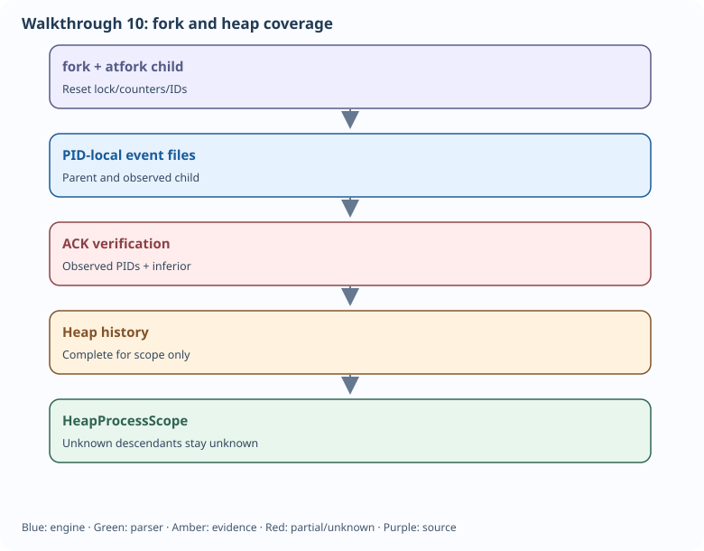
11. Trace Parser from the inside #
Scenario. A completed schema-2 JSON trace, such as examples/v21_heap.json used by the DOC-3 smoke run.
Route. Load → schema gate → Arc store → indexes → views → deep validation → TP-6 → TP-7 pages.
Call path. TraceStore::open reads/gates/decodes and calls assemble (src/trace_parser/mod.rs:240-258,973-995); TraceIndexes::build constructs position indexes (src/trace_parser/indexes.rs:94); raw()/semantic_input() borrow the store (src/trace_parser/views.rs:433-440); validate_deep runs explicit passes (src/trace_parser/validation.rs:243); validated_semantic retains one report (src/trace_parser/semantic.rs:38); checkpoint_summary composes a snapshot reference (src/trace_parser/consumer.rs:58); variables_page and heap_events_page return bounded borrowed items (:239,88).
Intermediate data. A TraceStore owns Arc<DebugSessionTrace> and Arc<TraceIndexes>; a CheckpointContext borrows one snapshot; an EvidenceRef holds a weak owner identity plus a location. The parser never clones the trace to answer a query.
Failure and uncertainty. A foreign reference fails before numeric lookup; an invalid range/page fails explicitly; a partial trace can be structurally sound but partial. Loading does not run deep validation.
Why this design. Canonical ownership makes references safe and cheap. Indexes store positions, not payloads. Validation is explicit and confidence is relationship-specific.
Navigate. Parser ingestion, ownership, indexes, TP-6, TP-7.
Diagram #

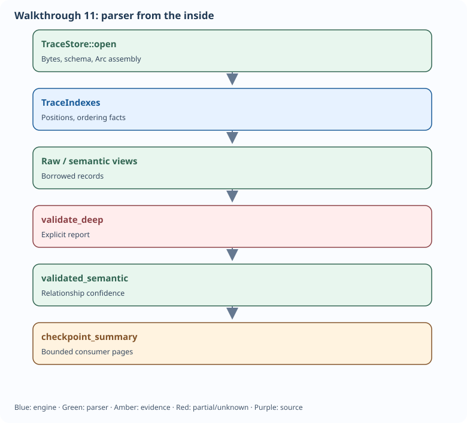
12. Corrupted imported evidence #
Scenario. Schema-compatible mutations of fresh traces: a pointer given a matching address candidate's allocation ID, a silent-fork trace claiming all children observed, and a forged realloc predecessor. The final audit reports structural findings and no definite semantic promotion.
Route. Mutated JSON → schema-only load → indexes → deep validation → finding → confidence downgrade → consumer result.
Call path. TraceStore::open accepts schema-compatible bytes; validate_deep runs validate_snapshots → validate_pointer_reference, validate_heap → validate_heap_process_coverage, and validate_heap → realloc_link (src/trace_parser/validation.rs:243-267,1306-1415,1568-1930); validated_semantic retains the report; qualify forces Contradictory when structural corruption exists (src/trace_parser/semantic.rs:61-67); TP-7 pages still expose raw records but do not claim definite relationships.
Observed outcomes.
| Mutation | Finding / disposition |
|---|---|
Pointer address_only given matching address candidate's ID | POINTER_HEAP_PROVENANCE_CONTRADICTORY; structurally unsound |
Silent fork unobserved_process_coverage forged as all children observed | HEAP_PROCESS_COVERAGE_UNSUPPORTED; observed-PID scope remains distinct |
realloc_from_id forged to successor ID | REALLOC_LINK_CONTRADICTORY and/or REALLOC_LINK_CYCLE; not definite |
Intermediate data. The raw mutated field remains in the trace. Validation reports the first location and occurrence count; semantic confidence describes the relationship, not the whole trace.
Failure and uncertainty. Deserialization success is not evidence trustworthiness. A consumer must inspect is_structurally_sound() and is_partial() separately. A missing optional field is not corruption; a contradictory relationship is.
Why this design. Raw preservation supports debugging; confidence prevents false certainty. TP8-F01's shared helper ensures parser validation and TP-6 agree.
Navigate. Validation, realloc, coverage, TP-6.
Diagram #

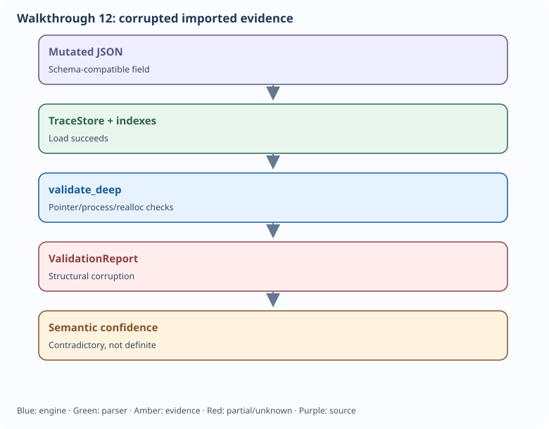
Source navigation and verification note #
The normal-execution counts and parser smoke are fresh DOC-2/DOC-3 runs. The recursion, heap, crash, loop, fork and adversarial counts are from docs/stage1-final-audit.md and are historical audit evidence, not DOC-4 reruns. Source links use the inspected dirty worktree at 558037c0da180e152a3e6cc3f351edf0b0583215. Illustrative JSON/MI rows are labeled and are not claimed as captured output.